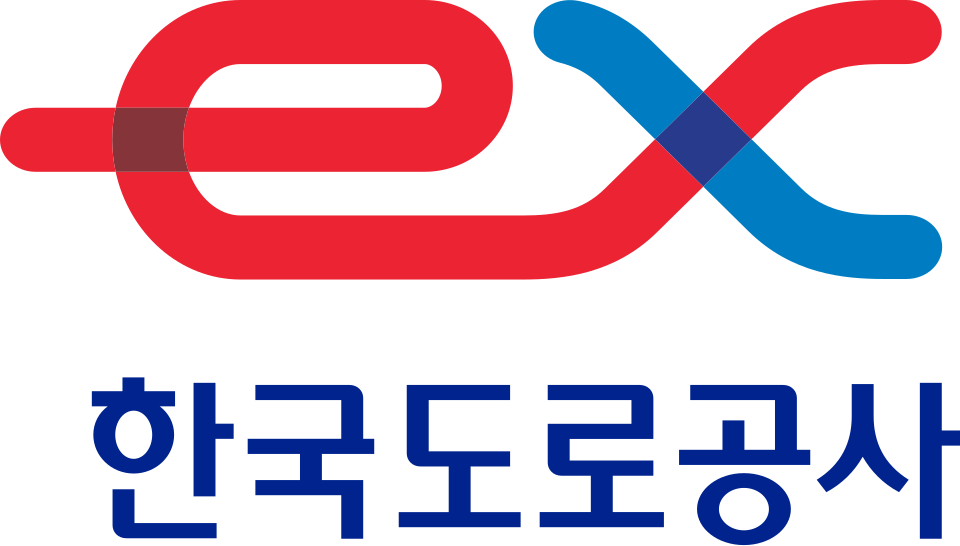

한국도로공사 Korea Expressway Corporation
한국도로공사(Korea Expressway Corporation)는 대한민국의 고속도로를 설치·관리하고 관련 사업을 통해 도로 정비와 도로교통 발달을 담당하는 준시장형 공기업이다.
최종 업데이트

한국도로공사는 어떤 브랜드인가
한국도로공사는 대한민국의 고속도로 건설과 운영을 중심으로 도로교통 기반을 관리하는 준시장형 공기업이다. 고속도로의 신설·확장과 유지 관리, 통행료 징수 및 영업 시스템 운영을 담당한다.
2024년 12월 기준 35개 노선과 총연장 4,238km 구간을 관리한다. 휴게·편의 시설 설치와 운영, 고속도로 인접 지역 개발, 도로 관련 연구개발과 교통정보 관리도 수행한다.
본사는 경상북도 김천시에 있으며 모기업은 대한민국 국토교통부이다.
한국도로공사는 어떻게 시작되고 성장했나
1969년 1월 한국도로공사법과 그 시행령이 공포된 뒤 같은 해 2월 15일 공사를 설립했다. 창립 당시 자본금은 500억원, 직원은 285명이었으며 대연각 임시사옥에서 업무를 개시하고 경인고속도로와 경부고속도로 일부 구간을 인수해 관리했다.
1994년 통행료 징수 기계화를 전면 시행하고 1999년 하이패스 시범 사업을 추진한 뒤 2000년 일부 영업소에서 운영을 개시했다. 2014년 11월 본사 사옥을 경상북도 김천시 김천혁신도시로 이전했다.
한국도로공사의 브랜드 아이덴티티는 무엇인가
고속도로의 건설과 유지 관리부터 통행료·교통정보·휴게시설 운영, 도로 연구개발까지 하나의 공공 조직에서 수행한다.
한국도로공사의 대표 제품과 서비스는 무엇인가
핵심 사업은 고속도로 신설·확장과 기존 도로·구조물·시설의 유지 관리이며, 설계와 품질·환경 관리도 함께 추진한다. 고속도로 이용자를 위한 휴게·편의 시설을 설치하고 관리하며 통행료 정산과 영업 시스템, 교통센터와 국가ITS센터를 운영한다.
고속도로 인접 지역 개발과 해외사업, 도로교통 연구개발, 스마트하이웨이와 초장대교량 관련 사업도 수행한다. 하이패스는 1999년 시범 사업을 거쳐 2007년 전국 영업소에 구축됐으며, 2017년 한국도로공사 하이패스 카드 출시와 함께 카드 직영 운영을 재개했다.
한국도로공사는 지금 어떤 상태인가
2024년 12월 현재 35개 고속도로 노선의 총연장 4,238km 구간을 관리한다. 같은 달 수도권제2순환선 파주-양주 구간 19.6km와 함양울산선 창녕-밀양 구간 28.5km를 개통했다.
대한민국 국토교통부 산하 공기업으로서 경상북도 김천시 본사와 지역본부, 도로교통연구원, 교통정보센터 및 여러 건설사업단을 운영하는 조직이다.
한국도로공사 로고는 어떻게 변해왔나
자주 묻는 질문
한국도로공사는 어느 나라 브랜드인가요?
한국도로공사는 한국의 모빌리티 브랜드입니다.
한국도로공사는 언제 설립되었나요?
한국도로공사는 1969년 설립되었습니다.
한국도로공사의 브랜드 아이덴티티는 무엇인가요?
고속도로의 건설과 유지 관리부터 통행료·교통정보·휴게시설 운영, 도로 연구개발까지 하나의 공공 조직에서 수행한다.
한국도로공사의 대표 제품은 무엇인가요?
핵심 사업은 고속도로 신설·확장과 기존 도로·구조물·시설의 유지 관리이며, 설계와 품질·환경 관리도 함께 추진한다.
한국도로공사는 현재 어떤 상태인가요?
2024년 12월 현재 35개 고속도로 노선의 총연장 4,238km 구간을 관리한다.
한국도로공사의 본사는 어디에 있나요?
한국도로공사의 본사는 경상북도에 있습니다(위키데이터 기준).
한국도로공사의 모기업은 어디인가요?
한국도로공사의 모기업은 대한민국 국토교통부입니다(위키데이터 기준).
출처와 검증
한국도로공사 관련 참고: 공식 웹사이트 · 위키데이터 Q489325 · 한국어 위키백과 · 영어 위키백과. 브랜드명은 한글과 원어를 함께 표기하되 데이터에 없는 표기는 만들지 않습니다. 기원 국가·설립연도는 검수된 정의문에서 확인된 값을 우선하고, 없을 때만 공식 웹사이트 URL이 일치하는 위키데이터 개체의 값을 씁니다. 위키데이터 값은 2026-09-20 기준입니다.